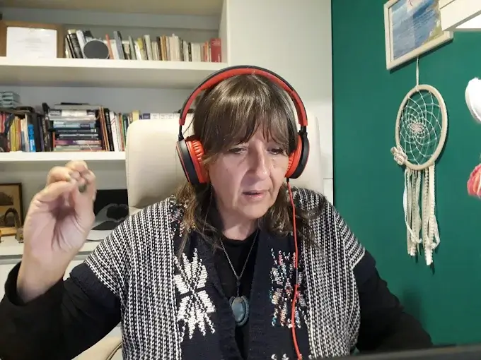
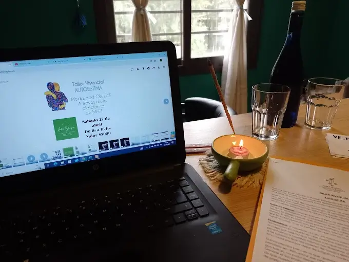

Primera consulta
Exploramos tu situación, síntoma o conflicto. Escuchamos tu historia y el contexto para identificar el programa biológico en juego.

Una sesión individual te permite ir al origen de tu síntoma o conflicto y desactivar el programa biológico con acompañamiento profesional. Online por Zoom o en consultorio presencial.
Tres momentos clave en cada encuentro.
Exploramos tu situación, síntoma o conflicto. Escuchamos tu historia y el contexto para identificar el programa biológico en juego.
Buscamos el shock biológico y su sentido biológico. Conectamos el síntoma con la capa embrionaria y el conflicto que lo activó.
Trabajamos la resolución y el cierre consciente del programa. Herramientas y acompañamiento para que puedas integrar el cambio.

Consultas por Zoom desde cualquier lugar. Mismo rigor y profundidad que en presencial, con la comodidad de tu espacio.

Para un acompañamiento personal, cercano y profundo. En un espacio tranquilo donde podés conectar con tu proceso sin distracciones.
Áreas que abordamos desde la Biodecodificación Biológica.
Dolores, molestias, enfermedades agudas o crónicas. Exploramos el sentido biológico y el conflicto asociado.
Angustia, miedos, bloqueos, patrones repetidos. Conectamos la emoción con la respuesta biológica.
Lealtades invisibles, duelos no resueltos, programas del clan que se repiten en la familia.
Lo que viviste en el vientre, el parto y la primera infancia como programación que influye en tu vida.
Reseñas verificadas en Google
Respuestas a dudas frecuentes.
Una sesión individual te permite ir al origen de tu síntoma o conflicto y desactivar el programa biológico con acompañamiento profesional.